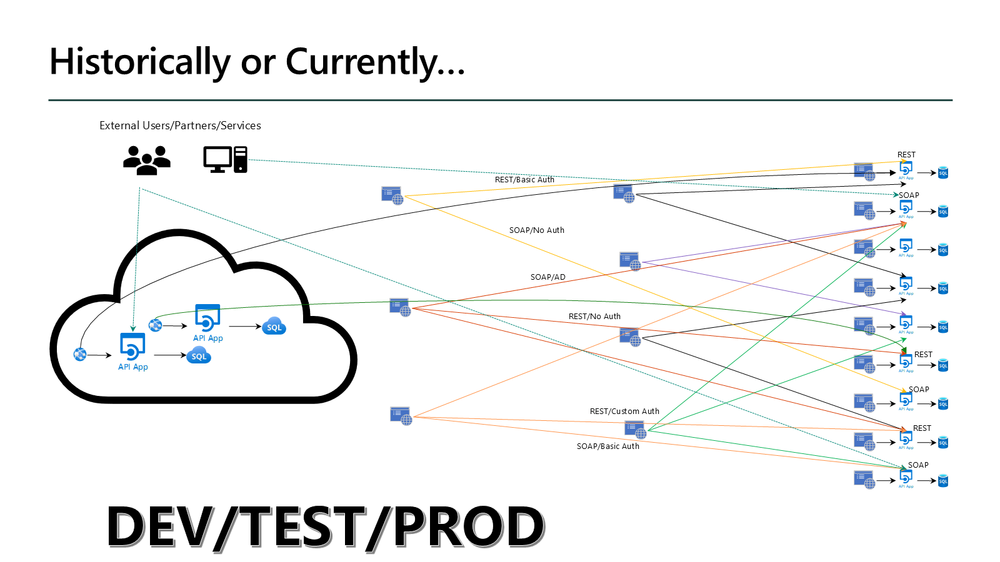
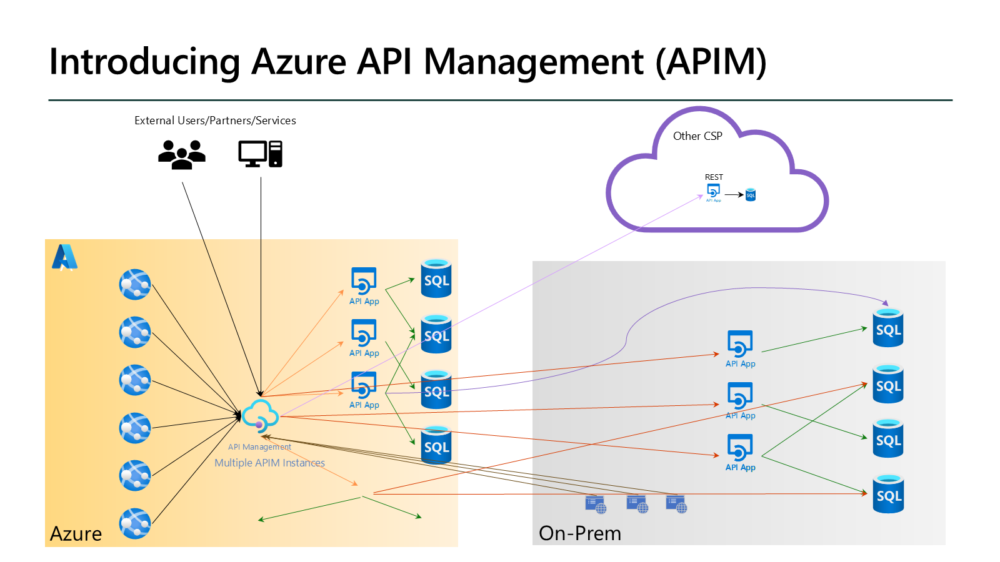
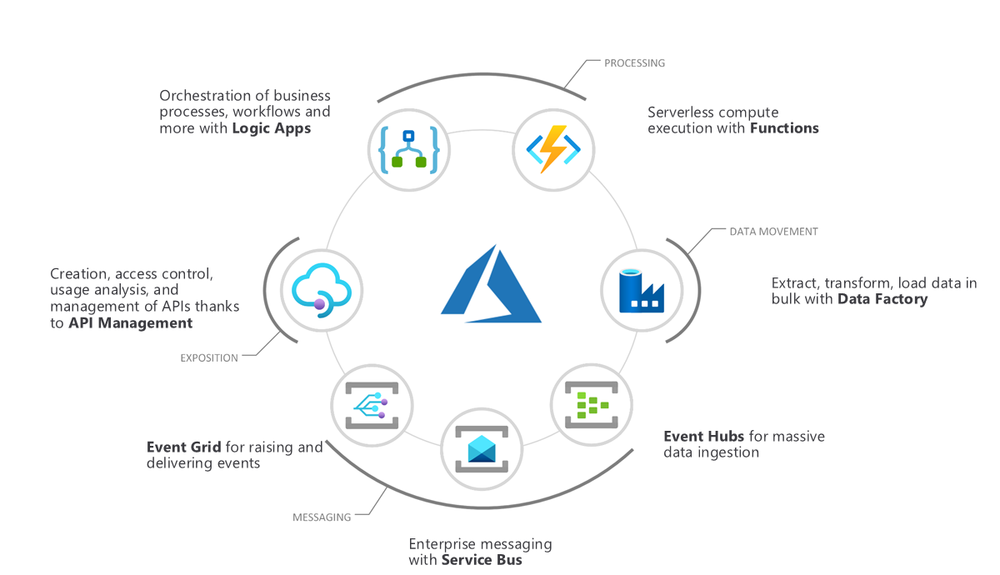
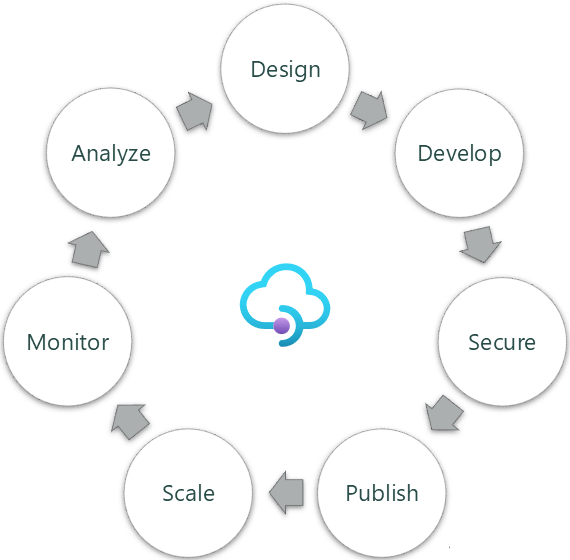

Start With the API Contract
An API gives a consumer a defined way to request behavior or data from a backend. For an HTTP API, the contract includes operations, paths, parameters, payloads, and responses. A consumer depends on that contract, not on the backend's internal code or hosting platform.
Without a shared management layer, each team can end up implementing its own authentication, traffic controls, documentation, and diagnostics. Different protocols and credentials make consumption harder, while inconsistent versioning and ownership increase maintenance effort. A gateway centralizes configured runtime concerns; an inventory makes the portfolio visible.


| Problem | Design response | Responsibility that remains |
|---|---|---|
| Inconsistent access controls | Apply shared gateway authentication and validation policies. | Authorize business actions and protect direct backend access. |
| Uncontrolled load and cost | Use traffic controls and suitable caching. | Capacity planning, budget monitoring, and cache-failure behavior. |
| Limited visibility | Collect runtime evidence and maintain API inventory. | Configure telemetry, ownership, retention, and incident response. |
| Repeated integration work | Publish stable contracts, documentation, and onboarding. | Review compatibility and keep definitions aligned with implementations. |
Two Complementary Services
Azure API Management gives you a gateway, a management plane, and a developer portal for publishing and operating APIs. You can apply cross-cutting behavior without embedding every concern in each backend.
Azure API Center gives you an organization-wide inventory for discovery and design-time governance. An API can be inventoried before it is deployed, or while it runs behind another gateway.
Publish
Expose a stable frontend API while its backend evolves.
Consume
Discover documentation, request access, and try operations.
Govern
Track contracts, versions, ownership metadata, and deployments.
Separate Runtime From Inventory
flowchart LR
C[API consumer] --> G[APIM gateway]
G --> B[Backend API]
P[API publisher] -.-> G
P -.-> I[API Center inventory]
class C,P external
class G,B azure
class I accent
Blue services carry API traffic. Purple inventory stores API information; it is not a hop in the request path. Dashed gray actors publish or consume APIs.
Key takeaway
Use APIM to control API execution. Use API Center to know which APIs exist and how they are represented. Use both when you need both outcomes.
Place APIM Among Integration Services
Use APIM to expose and govern an API, not as a replacement for its implementation or for every integration pattern. Your API can front a workflow, a function, an application, or a legacy service.

| Service | Primary role in this picture |
|---|---|
| API Management | Publish an API facade and apply runtime policies. |
| Logic Apps | Orchestrate workflows and connect systems. |
| Azure Functions | Run the code that implements event-driven or HTTP-triggered behavior. |
| Data Factory | Orchestrate data integration and ETL/ELT pipelines. |
| Service Bus | Broker enterprise application messages. |
| Event Hubs | Ingest and process event streams. |
| Event Grid | Route notifications to interested event handlers. |
For example, expose an order API through APIM, implement its workflow with Logic Apps or code, and use messaging for asynchronous work. Gateway policies should not become a hidden replacement for a complex business process.
Follow the Full API Lifecycle

- Design and develop: review contracts, import definitions or Azure resources, and mock responses in API Design and Import.
- Secure: separate identity and backend trust in Security; validate and transform messages in Policies.
- Publish: offer products and consumer onboarding in Developer Experience; manage versions, revisions, and deployment automation in Lifecycle.
- Scale: choose gateway placement, capacity, regions, and zones in Architecture; reduce unnecessary backend work with caching.
- Monitor and analyze: combine traces, metrics, logs, reports, and operational events in Observability. Use that evidence to improve the next release.
Your Learning Path
Follow eight core concept modules and five labs. You deploy a non-production Developer-tier APIM instance, publish a .NET 10 Catalog API and an HTTP-triggered function, customize the developer portal, and inventory the Catalog API in API Center.
The four-hour schedule includes 85 minutes of concepts, 130 minutes of active lab work, a 10-minute break, and 15 minutes for cleanup and recap. Provisioning waits and tool installation are not included in active lab time.
Extended reference sections cover the wider source presentation. A ninth, optional GenAI gateway module adds token governance, model routing, caching, and privacy. Reading or teaching these extensions is additional to the four-hour core; the five required labs are unchanged.
Lab 01: Deploy Developer SKU API Management starts the hands-on path.